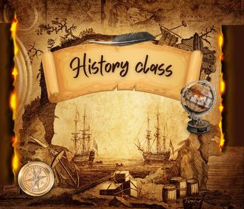

วิชาประวัติศาสตร์ (History)

[2]เนื้อหาวิชาประวัติศาสตร์ระดับมัธยมปลายแบ่งออกเป็น 2 ส่วนหลัก คือ ประวัติศาสตร์ไทย และ ประวัติศาสตร์สากล ตามหลักสูตรการศึกษาขั้นพื้นฐาน 1. ประวัติศาสตร์ไทยเน้นศึกษาความเป็นมาตั้งแต่ยุคก่อนประวัติศาสตร์จนถึงยุคปัจจุบัน วิธีการทางประวัติศาสตร์:การค้นคว้า ตรวจสอบ และประเมินความน่าเชื่อถือจากหลักฐานประเภทต่าง ๆ เช่น ศิลาจารึก พงศาวดาร และจดหมายเหตุ พัฒนาการของอาณาจักรไทย:การตั้งถิ่นฐานและการสถาปนาอาณาจักรสุโขทัย อยุธยา ธนบุรี และรัตนโกสินทร์ การปฏิรูปและเปลี่ยนแปลง:การปรับปรุงประเทศในสมัยรัชกาลที่ 5 และการเปลี่ยนแปลงการปกครอง พ.ศ. 2475 ภูมิปัญญาและสังคม:บทบาทสถาบันพระมหากษัตริย์ วัฒนธรรม ภูมิปัญญา และบทบาทของสตรีไทย 2. ประวัติศาสตร์สากลเน้นศึกษาการแบ่งยุคสมัยและการสร้างสรรค์อารยธรรมโลก การแบ่งยุคสมัย: ยุคโบราณ ยุคกลาง ยุคใหม่ และยุคปัจจุบันอารยธรรมโบราณ: อารยธรรมลุ่มแม่น้ำไทกรีส-ยูเฟรทีส (เมโสโปเตเมีย) ลุ่มแม่น้ำไนล์ (อียิปต์) ลุ่มแม่น้ำสินธุ (อินเดีย) และลุ่มแม่น้ำฮวงโห (จีน)ยุคกลางของยุโรป: ช่วงเวลาที่ศาสนจักรมีอิทธิพลสูงสุดและการเกิดระบบฟิวดัล (ศักดินาสวามิภักดิ์)ยุคฟื้นฟูศิลปวิทยาการและการปฏิวัติ: การสำรวจทางทะเล การปฏิวัติวิทยาศาสตร์ และการปฏิวัติอุตสาหกรรมที่เปลี่ยนโฉมหน้าโลก